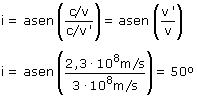

Para empezar, tanto el dibujo como la redacción de la pregunta producen confusión en mentes poco avezadas. Si el submarinista S ve el objeto P es porque hay un rayo que va desde P hasta S
El problema del problema es que en vez de dar los índices de refracción, dan las velocidades de la luz en cada medio. Pues no hay problema, basta con recordar que el índice de refracción es el cociente de la velocidad de la luz en el vacío entre la velocidad de la luz en el medio:  Esta es la dirección en que debe mirar el submarinista para que le llegue un rayo procedente de P |